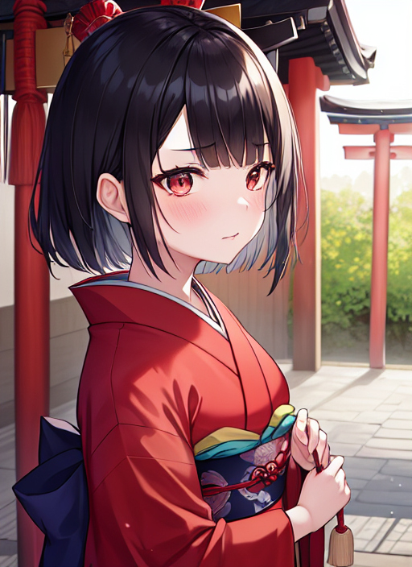

産変様
一人の男が道端に座り込んでいる。 年は18ぐらいで、着ている服は所々破れており、肌が露わになっている。 男の近くを歩く人々は、男をチラリと見てはすぐにその場から逃げるように立ち去る。
「へっ、どいつもこいつも一瞥して行っちまいやがる・・・。どうせ俺なんざ、社会の除け物なんだよ。」
男はそう呟くとだるそうに立ち上がり、歩き始めた。
男はしばらくの間、当てもなくフラフラと歩いていると少し古めかしい神社に辿り着いた。
「あれ・・・？何で俺、こんな所に来ちまったんだ・・・？」
男はなぜ自分がこの神社に来てしまったのか考えたが、ここに来たのも何かの縁と思い、賽銭を入れる事にした。
「えっと・・・金は・・・。」
服のポケットの中をまさぐってお金を探すと、ズボンのポケットから10円玉が出てきた。
「ちっ、たったこれっぽっちかよ。まぁ、無いよりはましか。」
男は10円玉を賽銭箱に入れる。 カタカタ チャリーン 10円玉が中に入った事を確認すると、二礼二拍手してから目を閉じる。
（どうか、今のクソみたいな人生から生まれ変われますように。）
そう願うと、男は深く一礼して神社を後にしようとした。
「おい、お主。」
後ろの方から声がした。 男が振り返ると、そこには綺麗な巫女服に身を包んだ少女が一人いた。
「あ？何だよ、ガキ？俺に用か？」
「わらわはガキではない！わらわはこの神社の神であるぞ！」
「あっそ。自称神様ね。で、その自称神様が一体俺に何の用だい？」
「だから神じゃと言っとろうが！・・・まぁ、よい。お主、生まれ変わりたいとか言っておったじゃろ？」
「ああ。」
「その願い、わらわが今から叶えてやろう。」
「ほー、そいつはありがたいねぇ。ぜひとも叶えてくれよ。」
冷めた目で少女を見ながら男は言った。
「ふっふっふ、腰を抜かすでないぞ。それーい！」
少女は両腕を大きく広げた。 すると、巫女服の袖口からキラキラと光る粉が噴き出し、男の全身に隈なくかかる。
「うわっぷ！おい！何すんだよ！？」
突然の事に大声を出す男。
その時だった。 170はあろうかという男の身長が、シュルルルと縮み始めた。
「うわぁっ！？」
身長はあっという間に縮んでいき、140を下回るぐらいになるとピタリと止まった。
「な、何だこれ！？お、俺の背が！？」
驚きを隠せない男。 だが次の瞬間、男の目の前が突然真っ暗になった。
「わぁっ！こ、今度は何だ！？」
男は慌てて顔を触ると、何やら指にワサワサした物が纏わり付く。 そのワサワサした物をかき分けて目を出すと、指に纏わりついた物体の正体が分かった。 それは何十本、いや何百本という長く黒い髪の毛だった。 まさかと思い自分の頭を触ってみると、ボサボサとしていたはずの自分の髪の毛が、サラサラとした指通りが滑らかな物へと変わっていた。
男の身に起こってるのは髪だけではない。 今まで身体を洗った事が無いかの様に汚れた全身の肌は、きめ細やかなスベスベの白い肌に。 枯れ枝の様な細い腕に脚は程良い感じに太くなり、手や足はそれに似合う様な美しい物に。 骸骨の様な痩せこけた顔はゆで卵の様にツルツルした小顔となり、顔を構成する目や鼻、口や耳などはどれも可愛らしいそれへと変わる。 肋骨が浮き出ていた胴体にはやんわりとした肉が付き、胸が若干プクッと膨らむ。
「あ・・・あぁ・・・あぁん・・・。」
口から漏れる声も、野太い物から子猫の様な高い物へと変わっていった。
更に、男が着ていた服にも目を疑う様な事が起こった。 男が着ていた所々破けていた服はまるで泥の様にドロドロになったかと思うと、男の全身を包み込んで綺麗な模様が描かれた真っ赤な着物と青色の帯に。 真っ黒に汚れた靴下は新品同様の足袋に、ボロボロの靴は黒色の鼻緒が付いた女性用の下駄になった。
数分後、男がいた所には実に可愛らしい13歳くらいの赤い着物を着た女の子が立っていた。
「はぁ・・・はぁ・・・う、うち・・・一体どうなってしもうたんや？・・・・・・・ん？」
女の子はふと自分の喉を触ったかと思うと、次に自分の身体をジッと見つめた。
「な、何やこれぇぇぇ！？」
女の子は大きな声を上げた。
「な、何で！？何でうち、女の子になってしもうたん！？しかも、ごく普通に京都弁喋っとるしぃ！」
「ほっほっほ、中々可愛らしくなったではないか。」
「あ、あんた、うちに何したん？」
「何をしたって・・・・・わらわはお主の願い通り、生まれ変わらせてやったまでよ。言ったはずじゃ、わらわは神だとな。わらわの名は産変様（さんへんさま）。人を生まれ変わらせる事を仕事としておるのじゃ。」
「そ、それでうちをこないな姿に・・・？」
「そうじゃ。お主は生まれつき、不幸の下に生まれた様な奴じゃった。だから、お主の全てを変えてやったのじゃ。年齢も、性別も、生まれた場所も・・・・・そして、これからの事もな。」
「これからの事？」
「ああ。お主は今、京都から転校してきた女の子という事になっておる。そして今日は、クラスメイトに東京の祭りを案内してもらう事になっておるんじゃ。ほれ、噂をすれば何とやらじゃな。」
「え？」
男が後ろを振り返ると、そこには着物姿の一人の少年が。
「わ、悪い。待たせちまったな。」
「え、えっと・・・・・どなたで？」
「何言ってんだよ？俺は倉田純一。お前の新しい友達だろ？」
「わ、分かっとったよ。冗談や。」
「ったく。さぁ、行こうぜ。早く行かねぇと祭りが始まっちまうからよ。」
「う、うん。」
男はそう返事をすると、産変様の方を向く。
「ほれ、はよう行け。たっぷりと新しい人生を楽しむがよい。」
「・・・はい。」
「早く来いよ！由紀！」
「うん！今行く！」
男はそう言うとニッコリと微笑み、自分の友達となった少年、純一の後を追った。 その姿は、どこからどう見ても、一人の女の子そのものだった。